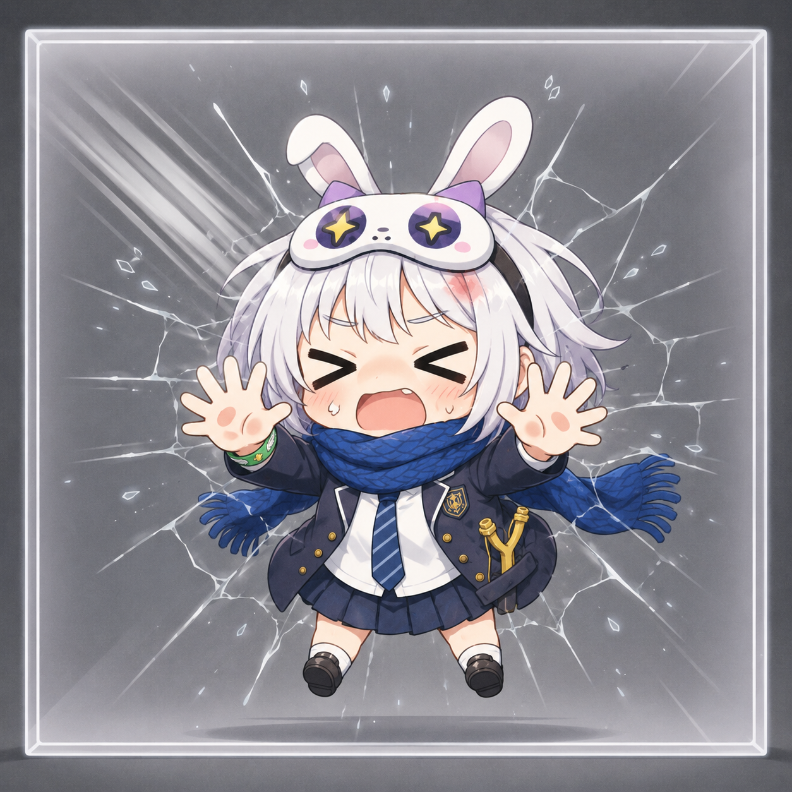

アイキャッチ配置案
ようこそ、自己紹介サイトへ
このサイトでは、私のプロフィールや趣味について紹介しています。アイキャッチはファーストビュー右側に置き、自己紹介の世界観をすぐ伝える配置がおすすめです。
- メインコピーの隣に置いて、視線を見出しから画像へ自然に流します。
- スマートフォンでは見出し直下に移動し、スクロール前に印象を残します。
- 各ページの導入にも同じ比率で展開でき、サイト全体の統一感を作れます。

Now Loading...
アイキャッチ配置案
このサイトでは、私のプロフィールや趣味について紹介しています。アイキャッチはファーストビュー右側に置き、自己紹介の世界観をすぐ伝える配置がおすすめです。
